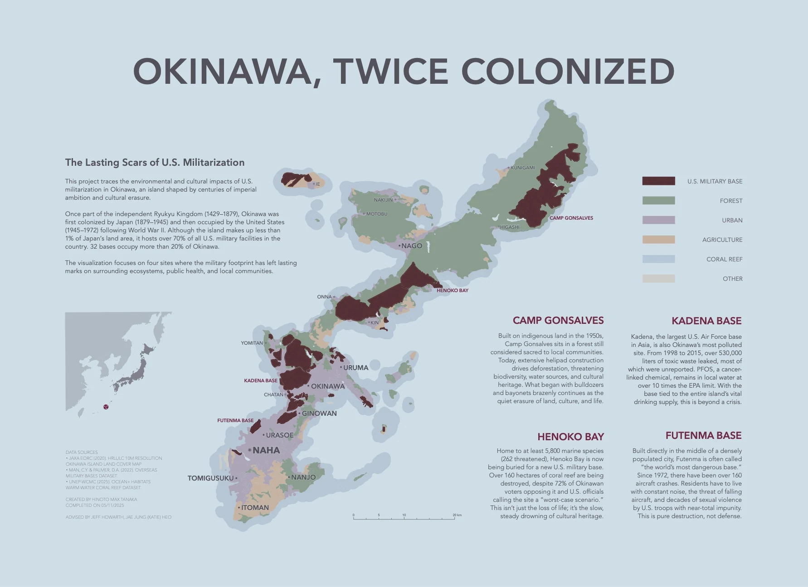
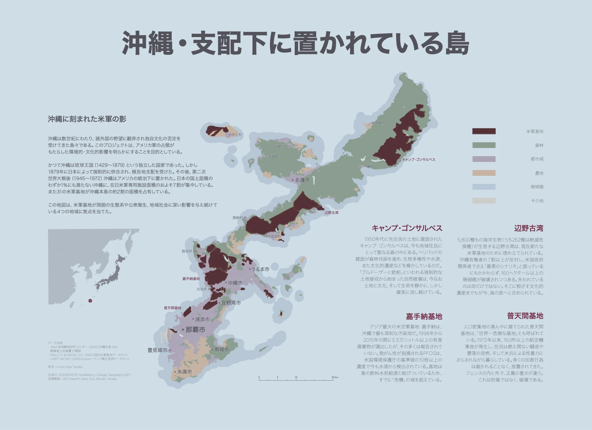
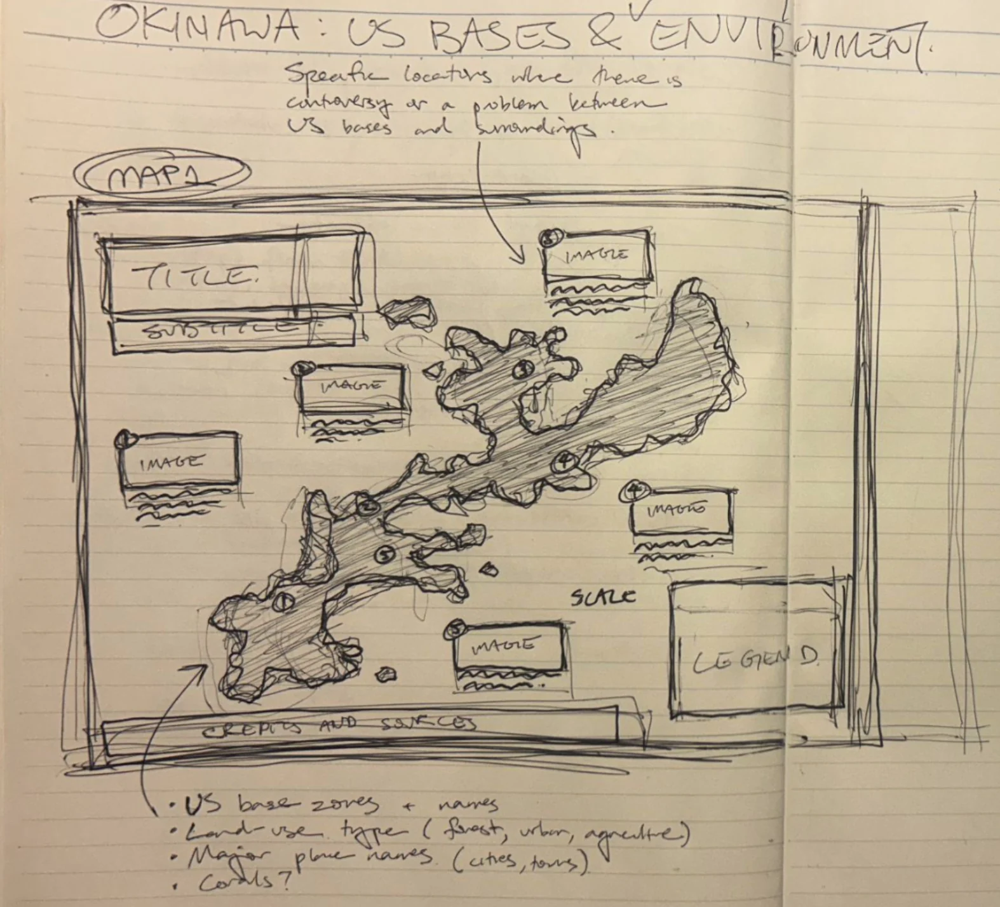
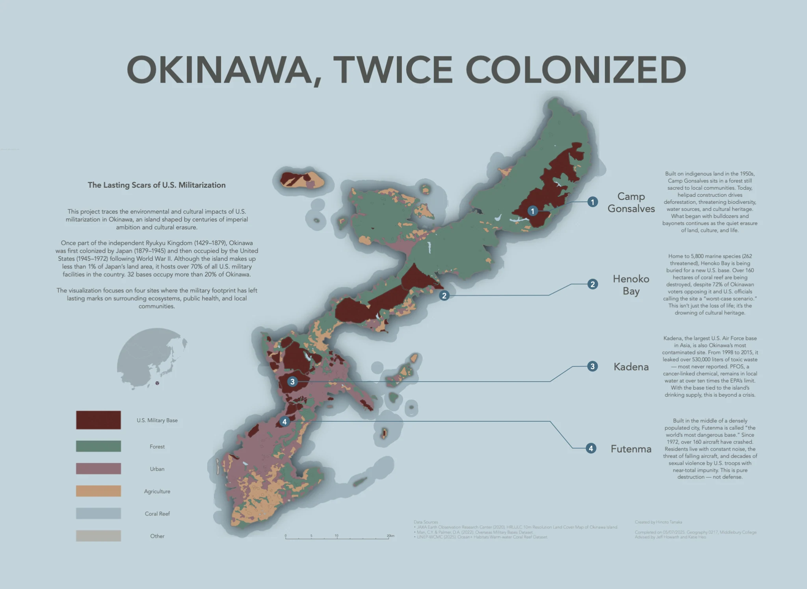

Okinawa, Twice Colonized
U.S. military bases cover a large part of Okinawa. I wanted to show what surrounds them.


I mapped the bases alongside forests, farmland, towns, and coral reefs. Four places—Camp Gonsalves, Henoko Bay, Kadena, and Futenma—show different ways the military presence affects land and communities.
I used QGIS for the spatial data and Illustrator for the final map. I made English and Japanese versions and presented the work at NACIS 2025.
Process

